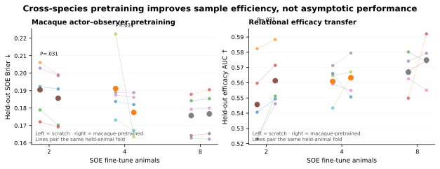
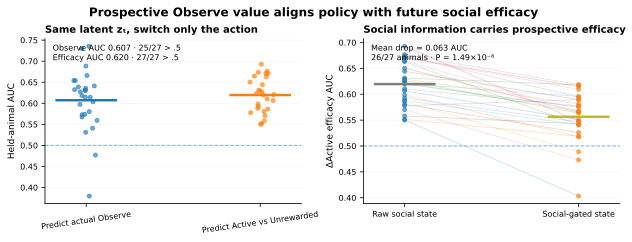

SAME REAL PRESENT
SOCIAL BEHAVIOR / VIRTUAL MOUSE / BEHAVIORAL ATLAS
A 12-motif behavioral atlas
Move from a Virtual Mouse behavior directly into its position in behavioral space. Every displayed point below is an exact contiguous motif run from the same session and can be played back from the Virtual Mouse reconstruction.
Social orient—
Social observation P—
Social distance—
Head directions OBS / DEM—
Hero example: latest Module 1.4 Virtual Mouse paired with exact frozen-v85 behavioral-space coordinates.
Explore the motifs
The behavioral space is organized into 12 motifs. Use Social orient 1/2/4/7 to see the established motif structure independent of model threshold, then switch to Observation model probability to see the conservative frame-wise v5 confidence layer. Each clickable run reports Social orient, Social observation probability, nose-to-nose Social distance, and the OBS / DEM head directions, while retaining the stricter validated observation-bout label separately. Click any run to play the exact Virtual Mouse segment, click empty space to place the comparison circle, drag to pan, and scroll or pinch to zoom.
HELD-OUT BEST-CASE VISUALIZATION · ANM4 D139
Social Learning World Model (SLM World Model)
This held-out example compares the recorded future directly with saved model rollouts from the same real present. Each step and probability below comes from the real session/model outputs; no illustrative trajectory is drawn. The population benchmark remains available below.
A SLM World Model learns a predictive social state
P(Observe)
P(outcome)
P(next motif)
ztlatent social state
at + ot→
zt+1predicted state
at+1 + ot+1→
zt+2predicted state
Observed xtself state · demonstrator state · recent action/outcome history
→
Encoder + GRUposterior state from real sequence
→
The 5-event view is factorized from policy + outcome heads. The 12-motif state is a future target, not an encoder input.
B Same present, different social information
Same recorded presentANM4 D139 · held-out animal
NORMAL
All observed social channels
frozen posterior → imagined future
SOCIAL GATE
Demonstrator channels removed
same model · same present
6 / 8SLM top-1 motif steps
0 / 8Markov top-1 motif steps
76.0 → 71.1%P(≥1 Active), normal → gated
Global benchmark across 27 held-out animals
The hero above is deliberately the clearest example; these population-level results establish that the advantage is not restricted to that event.
Scaling & prospective Observe value
IN-DOMAIN SCALING
0.562 → 0.646
Held-out social-efficacy AUC from 2 → 16 SOE training animals. All 15 matched fold × repeat comparisons improved (P=3.05×10−5).
CROSS-SPECIES SAMPLE EFFICIENCY
5 / 5 folds
Macaque actor–observer pretraining improves SOE Brier with only 2 training animals (0.1904 → 0.1856, P=.031); efficacy AUC also improves 5/5.
PROSPECTIVE OBSERVE VALUE
AUC 0.620
At the same latent state zt, ΔActive = P(Active|Observe) − P(Active|Other) predicts whether an actual Observe becomes Active rather than Unrewarded (27/27 above chance).
What scales is not only next-event prediction.
More animals sharpen a transferable social-efficacy state; aligned macaque social experience can warm-start that state when SOE data are scarce, whereas blindly adding heterogeneous datasets is not monotonically beneficial.



Model-family comparison · 27 held-out animals


Multi-step predictive horizon

LEARNING DEPENDENCE · 27 LEARNERS VS 13 NON-LEARNERS
Learning rewrites the factorized 5-event transition graph
Training reorganizes a factorized 5-event graph: Other/Observe sampling states lead to Unrewarded/Active/Passive bouts, which then lead into the next sampling state. The same event language is now used for learning and for the SLM World Model benchmark.


SUPPORTED INTERPRETATION
Learning reorganizes the factorized 5-event graph.
How to read this result
Click any dot to play · click/drag the circle to compare · drag elsewhere to pan · scroll/pinch to zoom
Selected examples
Click a point
Motif dictionary
Each motif is defined in the frozen v85 behavioral atlas. Social Observation statistics use the frame-wise model inference/probability; the stricter merged label is retained separately for validating representative video bouts.